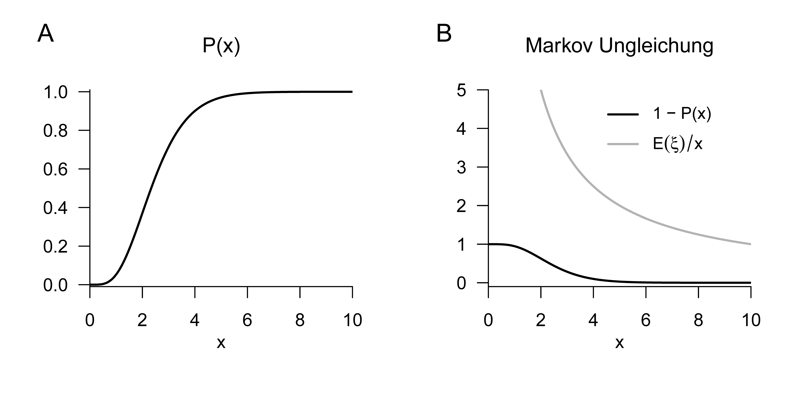
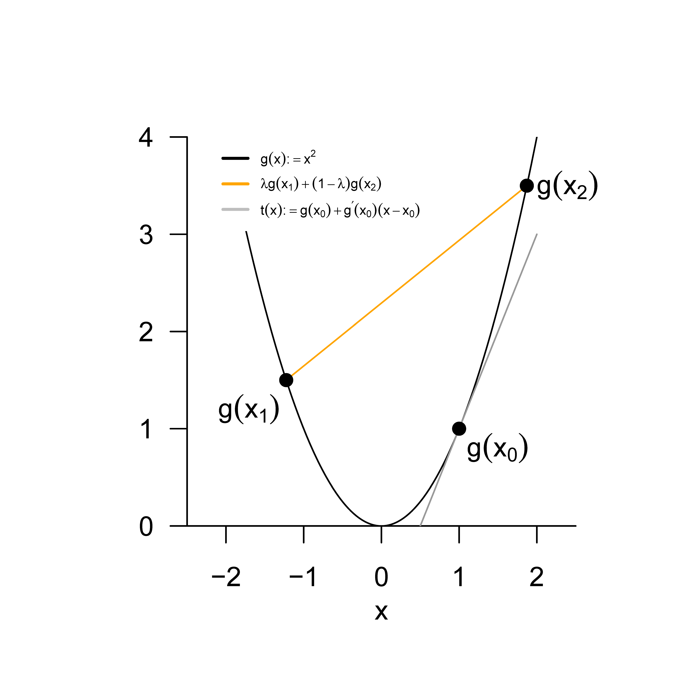

14 Ungleichungen
Das Thema dieses Kapitels sind Ungleichungen, die in der Wahrscheinlichkeitstheorie häufig zur Abschätzung von Wahrscheinlichkeiten und Erwartungswerten genutzt werden. Wir gliedern die Ungleichungen entsprechend in Wahrscheinlichkeitsungleichungen (Markov Ungleichung und Chebychev Ungleichung, Kapitel 14.1) und Erwartungswertungleichungen (Cauchy-Schwarz Ungleichung, Korrelationsungleichung und Jensensche Ungleichung, Kapitel 14.2).
14.1 Wahrscheinlichkeitsungleichungen
Die Markov Ungleichung stellt einen Bezug zwischen den Überschreitungswahrscheinlichkeiten (vgl. Theorem 11.2) und dem Erwartungswert einer nicht-negativen Zufallsvariablen, also einer Zufallsvariable, für die \(\mathbb{P}(\xi \ge 0 ) = 1\) ist, her. Im Beweis dieser Ungleichung wollen wir nur den Fall einer kontinuierlichen Zufallsvariable betrachten.
Theorem 14.1 (Markov Ungleichung) \(\xi\) sei eine Zufallsvariable mit \(\mathbb{P}(\xi \ge 0) = 1\). Dann gilt für alle \(x \in \mathbb{R}\), dass \[\begin{equation} \mathbb{P}(\xi \ge x) \le \frac{\mathbb{E}(\xi)}{x}. \end{equation}\]
Beweis. Wir betrachten den Fall einer kontinuierlichen Zufallsvariable \(\xi\) mit WDF \(p\). Wir halten zunächst fest, dass \[\begin{equation} \mathbb{E}(\xi) = \int_{-\infty}^\infty s \, p(s)\,ds = \int_0^\infty s \, p(s)\,ds = \int_0^x s \, p(s)\,ds + \int_x^\infty s \, p(s)\,ds, \end{equation}\] weil \(\xi\) nicht-negativ ist. Es folgt dann \[\begin{equation} \mathbb{E}(\xi) \ge \int_x^\infty s \, p(s)\,ds \ge \int_x^\infty x \, p(s)\,ds = x\int_x^\infty p(s)\,ds = x\, \mathbb{P}(\xi \ge x). \end{equation}\] Dabei gilt die erste Ungleichung, weil \[\begin{equation} \int_{0}^x s \, p(s)\,ds \ge 0, \end{equation}\] und die zweite Ungleichung gilt, weil \(x \le \xi\) für \(\xi \in [x,\infty[\). Es folgt also, dass \[\begin{equation} \mathbb{E}(\xi) \ge x\, \mathbb{P}(\xi \ge x) \Leftrightarrow \mathbb{P}(\xi \ge x) \le \frac{\mathbb{E}(\xi)}{x}. \end{equation}\]
Gilt beispielweise für eine nichtnegative Zufallsvariable \(\xi\), dass \(\mathbb{E}(\xi) = 1\) ist, dann folgt aus der Markov Ungleichung, dass \[\begin{equation} \mathbb{P}(\xi \ge 100) \le 0.01. \end{equation}\]
Beispiel
Als Beispiel für die Markov Ungleichung betrachten wir den Fall einer Gamma-Zufallsvariable \(\xi \sim G(\alpha,\beta)\). Gamma-Zufallsvariablen sind bekanntlich per Definition nicht-negativ (vgl. Definition 11.10) und wir haben gesehen, dass für den Erwartungswert einer Gamma-Zufallsvariable \(\mathbb{E}(\xi) = \alpha\beta\) gilt (vgl. Theorem 13.8). Wir betrachten konkret den Fall \(\alpha := 5\) und \(\beta := 2\), so dass \(\xi\) auch einer \(\chi^2\)-Zufallsvariable mit Freiheitsgradparameter \(n = 10\) entspricht. In Abbildung 14.1 A stellen wir die KVF \(P\) dieser Zufallsvariable dar, in Abbildung 14.1 B visualisieren wir die in der Markov Ungleichung betrachteten Größen \(\mathbb{E}(\xi)/x\) und die Überschreitungswahrscheinlichkeit \(\mathbb{P}(\xi \ge x) = 1 - P(x)\). Offensichtlich trifft die Markov Ungleichung zu.

Die Chebychev Ungleichung setzt die Wahrscheinlichkeit dafür, dass eine Zufallsvariable Werte weit von ihrem Erwartungswert entfernt annimmt, in Bezug zur ihrer Varianz. Die Chebychev Ungleichung liefert damit eine Begründung dafür, warum die in Definition 13.5 formulierte Größe als ein Maß für die Streuung einer Zufallsvariable verstanden werden kann. Im Beweis der Chebyshev Ungleichung wird an entscheidender Stelle auf die Markov Ungleichung zurück gegriffen.
Theorem 14.2 (Chebyshev Ungleichung) Es sei \(\xi\) eine Zufallsvariable mit Varianz \(\mathbb{V}(\xi)\). Dann gilt für alle \(x \in \mathbb{R}\) \[\begin{equation} \mathbb{P}(|\xi - \mathbb{E}(\xi)| \ge x) \le \frac{\mathbb{V}(\xi)}{x^2}. \end{equation}\]
Beweis. Wir halten zunächst fest, dass für \(a,b \in \mathbb{R}\) gilt, dass aus \(a^2 \ge b^2\) folgt, dass \(|a| \ge b\). Dazu betrachten wir die folgenden vier möglichen Fälle.
- \(a^2 \ge b^2\) für \(a \ge 0\) und \(b \ge 0\). Dann gilt \[\begin{equation} a^2 \ge b^2 \Rightarrow \sqrt{a^2} \ge \sqrt{b^2} \Rightarrow a \ge b \Rightarrow |a| \ge b. \end{equation}\]
- \(a^2 \ge b^2\) für \(a \le 0\) und \(b \ge 0\). Dann gilt \[\begin{equation} a^2 \ge b^2 \Rightarrow \sqrt{a^2} \ge \sqrt{b^2} \Rightarrow -a \ge b \Rightarrow |a| \ge b. \end{equation}\]
- \(a^2 \ge b^2\) für \(a \ge 0\) und \(b \le 0\). Dann gilt \[\begin{equation} a^2 \ge b^2 \Rightarrow \sqrt{a^2} \ge \sqrt{b^2} \Rightarrow a \ge -b \ge b \Rightarrow |a| \ge b. \end{equation}\]
- \(a^2 \ge b^2\) für \(a \le 0\) und \(b \le 0\). Dann gilt \[\begin{equation} a^2 \ge b^2 \Rightarrow \sqrt{a^2} \ge \sqrt{b^2} \Rightarrow -a \ge -b \ge b \Rightarrow |a| \ge b. \end{equation}\] Als nächstes definieren wir \(\upsilon := (\xi - \mathbb{E}(\xi))^2\). Dann gilt offenbar \(\upsilon \ge 0\) und es folgt aus der Markov Ungleichung \[\begin{align} \begin{split} \mathbb{P}\left(\upsilon \ge x^2\right) & \le \frac{\mathbb{E}(\upsilon)}{x^2} \\ \Leftrightarrow \mathbb{P}\left((\xi - \mathbb{E}(\xi))^2 \ge x^2 \right) & \le \frac{\mathbb{E}\left((\xi - \mathbb{E}(\xi))^2 \right)}{x^2} \\ \Leftrightarrow \mathbb{P}(|\xi - \mathbb{E}(\xi)| \ge x) & \le \frac{\mathbb{V}(\xi)}{x^2}. \end{split} \end{align}\]
Beispielweise gilt für eine Zufallsvariable immer, dass die Wahrscheinlichkeit für eine absolute Abweichung vom doppelten ihrer Standardabweichung höchstens \(1/4\) ist, also Frequentistisch betrachtet nur für etwa ein Viertel ihrer Realisierungen zutrifft, und die Wahrscheinlichkeit für eine absolute Abweichung vom dreifachen ihrer Standardabweichung höchstens \(1/9\) ist, also Frequentistisch betrachtet nur für etwa ein Zehntel ihrer Realisierungen zutrifft, jeweils unabhängig davon, von welcher genauen Form die Verteilung der Zufallsvariable ist. Dies folgt mit der Chebyshev Ungleichung aus
\[\begin{equation}
\mathbb{P}\left(|\xi - \mathbb{E}(\xi)| \ge 2 \sqrt{\mathbb{V}(\xi)}\right)
\le \frac{\mathbb{V}(\xi)}{\left(2 \sqrt{\mathbb{V}(\xi)}\right)^2} =
\frac{1}{4}
\end{equation}\] und \[\begin{equation}
\mathbb{P}\left(|\xi - \mathbb{E}(\xi)| \ge 3 \sqrt{\mathbb{V}(\xi)}\right)
\le \frac{\mathbb{V}(\xi)}{\left(3 \sqrt{\mathbb{V}(\xi)}\right)^2} =
\frac{1}{9}.
\end{equation}\]
14.2 Erwartungswertungleichungen
Die Cauchy-Schwarz Ungleichung ist eine zentrale Ungleichung der modernen Mathematik, die in verschiedenen mathematischen Bereichen wie der Analysis, der Vektorraumtheorie und eben auch der Wahrscheinlichkeitstheorie zur Anwendung kommt (vgl. Steele (2006)). In Bezug auf Erwartungswerte von Zufallsvariablen hat sie die folgende Form.
Theorem 14.3 (Cauchy-Schwarz Ungleichung) \(\xi\) und \(\upsilon\) seien zwei Zufallsvariablen und \(\mathbb{E}(\xi\upsilon)\) sei endlich. Dann gilt \[\begin{equation} \mathbb{E}(\xi\upsilon)^2 \le \mathbb{E}\left(\xi^2\right)\mathbb{E}\left(\upsilon^2 \right). \end{equation}\]
Für einen Beweis verweisen wir auf den Beweis von Theorem 4.6.2 in DeGroot & Schervish (2012). Analog zu Theorem 14.3 gilt zum Beispiel für Vektoren \(x,y \in \mathbb{R}^n\), dass \[\begin{equation} \langle x,y \rangle^2 \le \langle x,x \rangle \langle x,y \rangle. \end{equation}\]
Im Kontext der probabilistischen Datenanalyse ist die Anwendung der Cauchy-Schwarz Ungleichung vor allem im Beweis der sogenannten Korrelationsungleichung von Relevanz.
Theorem 14.4 (Korrelationsungleichung) \(\xi\) und \(\upsilon\) seien Zufallsvariablen mit \(\mathbb{V}(\xi), \mathbb{V}(\upsilon) > 0\). Dann gelten \[\begin{equation} \frac{\mathbb{C}(\xi,\upsilon)^2}{\mathbb{V}(\xi)\mathbb{V}(\upsilon)} \le 1 \mbox{ und } -1 \le \rho(\xi,\upsilon) \le 1. \end{equation}\]
Beweis. Mit der Cauchy-Schwarz-Ungleichung für zwei Zufallsvariablen \(\alpha\) und \(\beta\) gilt, dass \[\begin{equation} \mathbb{E}(\alpha\beta)^2 \le \mathbb{E}\left(\alpha^2\right)\mathbb{E}\left(\beta^2\right). \end{equation}\] Wir definieren nun \(\alpha := \xi -\mathbb{E}(\xi)\) und \(\beta := \upsilon - \mathbb{E}(\upsilon)\). Dann besagt die Cauchy-Schwarz Ungleichung gerade, dass \[\begin{equation} \mathbb{E}\left((\xi -\mathbb{E}(\xi))(\upsilon-\mathbb{E}(\upsilon))\right)^2 \le \mathbb{E}\left((\xi -\mathbb{E}(\xi))^2 \right) \mathbb{E}\left((\upsilon-\mathbb{E}(\upsilon))^2 \right). \end{equation}\] Also gilt \[\begin{align} \begin{split} \mathbb{C}(\xi,\upsilon)^2 \le \mathbb{V}(\xi)\mathbb{V}(\upsilon) \Leftrightarrow \frac{\mathbb{C}(\xi,\upsilon)^2}{\mathbb{V}(\xi)\mathbb{V}(\upsilon)} \le 1. \end{split} \end{align}\] Weiterhin folgt aus der Definition der Korrelation dann sofort, dass auch \[\begin{equation} \rho(\xi,\upsilon)^2 \le 1. \end{equation}\] Dann gilt aber auch \[\begin{equation} |\rho(\xi,\upsilon)^2| \le 1 \Leftrightarrow -1 \le \rho(\xi,\upsilon) \le 1, \end{equation}\] denn \[\begin{equation} \rho(\xi,\upsilon)^2 \le 1 \Rightarrow \sqrt{\rho(\xi,\upsilon)^2} \le \sqrt{1} \Rightarrow \quad\rho(\xi,\upsilon) \le 1 \Rightarrow |\rho(\xi,\upsilon)| \le 1 \mbox{ für } \rho(\xi,\upsilon) \ge 0 \end{equation}\] und \[\begin{equation} \rho(\xi,\upsilon)^2 \le 1 \Rightarrow \sqrt{\rho(\xi,\upsilon)^2} \le \sqrt{1} \Rightarrow -\rho(\xi,\upsilon) \le 1 \Rightarrow |\rho(\xi,\upsilon)| \le 1 \mbox{ für } \rho(\xi,\upsilon) \le 0 \end{equation}\]
Die Korrelationsungleichung wird manchmal auch als Kovarianzungleichung bezeichnet. Insbesondere besagt sie, dass die Korrelation von Zufallsvariablen normalisiert ist, also immer Werte zwischen -1 und 1 inklusive annimmt (vgl. Kapitel 13.4).
Die Jensensche Ungleichung schließlich liefert Abschätzungen für den Erwartungswert einer durch eine konvexe oder konkave Funktion transformierte Zufallsvariable. Sie kommt in der Betrachtung von Parameterschätzereigenschaften (vgl. ?sec-parameterschätzung) und insbesondere als Grundlage der Variationalen Bayesianischen Inferenz zum Einsatz. Wir erinnern daran, dass sich eine konvexe Funktion \(g\) dadurch auszeichnet, dass der Funktionsgraph von \(g\) über einem Intervall \([x_1,x_2]\) immer unter der verbindenden Geraden zwischen den Funktionswerten \(g(x_1)\) und \(g(x_2)\) liegt, wohingegehn bei einer konkaven Funktion \(g\) dieser immer über der verbindenden Geraden zwischen den Funktionswerten \(g(x_1)\) zu \(g(x_2)\) liegt. Wir visualisieren dies für eine konvexe Funktion in Abbildung 14.2.
Theorem 14.5 (Jensensche Ungleichung) \(\xi\) sei eine Zufallsvariable und \(g : \mathbb{R} \to \mathbb{R}\) eine konvexe Funktion, d.h. \[\begin{equation} g(\lambda x_1 + (1-\lambda)x_2) \le \lambda g(x_1) + (1-\lambda)g(x_2) \end{equation}\] für alle \(x_1,x_2 \in \mathbb{R}, \lambda \in [0,1]\). Dann gilt \[\begin{equation} \mathbb{E}(g(\xi)) \ge g(\mathbb{E}(\xi)). \end{equation}\] Analog sei \(g : \mathbb{R} \to \mathbb{R}\) eine konkave Funktion, d.h. \[\begin{equation} g(\lambda x_1 + (1-\lambda)x_2) \ge \lambda g(x_1) + (1-\lambda)g(x_2) \end{equation}\] für alle \(x_1,x_2 \in \mathbb{R}, \lambda \in [0,1]\). Dann gilt \[\begin{equation} \mathbb{E}(g(\xi)) \le g(\mathbb{E}(\xi)). \end{equation}\]
Beweis. Es sei \(g\) eine konvexe Funktion. Dann gilt für die Tangente \(t\) von \(g\) in \(x_0 \in \mathbb{R}\) für alle \(x \in \mathbb{R}\), dass \[\begin{equation} g(x) \ge t(x) := g(x_0) + g'(x_0)(x - x_0) \end{equation}\] Wir setzen nun \(x := \xi\) und \(x_0 := \mathbb{E}(\xi)\). Dann gilt mit obiger Ungleichung, dass \[\begin{equation} g(\xi) \ge g(\mathbb{E}(\xi)) + g'(\mathbb{E}(\xi))(\xi - \mathbb{E}(\xi)) \end{equation}\] Erwartungswertbildung ergibt dann \[\begin{align} \begin{split} \mathbb{E}(g(\xi)) & \ge \mathbb{E}(g(\mathbb{E}(\xi))) + \mathbb{E}(g'(\mathbb{E}(\xi))(\xi - \mathbb{E}(\xi))) \\ \Leftrightarrow \mathbb{E}(g(\xi)) & \ge g(\mathbb{E}(\xi)) + g'(\mathbb{E}(\xi))\mathbb{E}((\xi - \mathbb{E}(\xi))) \\ \Leftrightarrow \mathbb{E}(g(\xi)) & \ge g(\mathbb{E}(\xi)) + g'(\mathbb{E}(\xi))(\mathbb{E}(\xi) - \mathbb{E}(\xi)) \\ \Leftrightarrow \mathbb{E}(g(\xi)) & \ge g(\mathbb{E}(\xi)). \end{split} \end{align}\] Sei nun \(g\) eine konkave Funktion. Dann ist \(-g\) eine konvexe Funktion. Mit der Jensenschen Ungleichung für konvexe Funktionen folgt dann die Jensensche Ungleichung für konkave Funktionen aus \[\begin{align} \begin{split} \mathbb{E}(-g(\xi)) & \ge -g(\mathbb{E}(\xi)) \\ \Leftrightarrow -\mathbb{E}(g(\xi)) & \ge -g(\mathbb{E}(\xi)) \\ \Leftrightarrow \mathbb{E}(g(\xi)) & \le g(\mathbb{E}(\xi)). \end{split} \end{align}\]
Im Kontext der Variationalen Bayesianischen Inferenz ist grundlegend, dass der Logarithmus ist eine konkave Funktion ist und damit für eine beliebige Zufallsvariable \(\xi\) gilt, dass \[\begin{equation} \mathbb{E}(\ln \xi) \le \ln \mathbb{E}(\xi). \end{equation}\]

14.3 Selbstkontrollfragen
- Geben Sie die Markov Ungleichung wieder.
- Geben Sie die Chebyshev Ungleichung wieder.
- Geben Sie die Cauchy-Schwarz Ungleichung wieder.
- Geben Sie die Korrelationsungleichung wieder.
- Geben Sie die Jensensche Ungleichung wider.